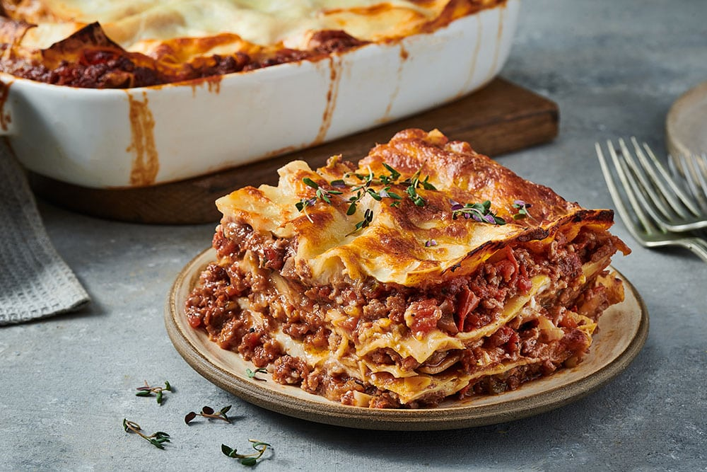

Lasagne
Home

Description
Classic Italian Lasagne - A Hearty, Comforting Favorite
Indulge in the rich and comforting flavors of this classic Italian lasagne, layered with love and tradition. This dish features perfectly cooked pasta sheets, nestled between a savory, slow-simmered meat sauce, a creamy béchamel or ricotta filling, and generous layers of melted cheese. Baked to golden perfection, every bite is a perfect balance of tender pasta, hearty sauce, and cheesy goodness.
Whether you're making it for a cozy family dinner or a special occasion, this homemade lasagne is guaranteed to be a crowd-pleaser. Serve it with a fresh green salad and garlic bread for the ultimate Italian feast.
Buon appetito!
Ingredients:
Ingredients for Lasagne (Serves 4-6)
For the Meat Sauce
2 tbsp olive oil
1 onion, finely chopped
2 cloves garlic, minced
500g ground beef (or a mix of beef and pork)
1 can (400g) diced tomatoes
2 tbsp tomato paste
1 tsp dried oregano
1 tsp dried basil
½ tsp salt
½ tsp black pepper
1 tsp sugar (optional, to balance acidity)
100ml red wine (optional, for depth of flavor)
For the Béchamel Sauce
50g butter
50g flour
500ml milk
½ tsp salt
¼ tsp nutmeg
50g grated Parmesan cheese
For Assembling the Lasagne
9-12 lasagne sheets (pre-cooked or oven-ready)
150g shredded mozzarella cheese
The steps to making a classic lasagne recipe
Step 1: Prepare the Meat Sauce
- Heat the olive oil in a large pan over medium heat.
- Add the chopped onion and garlic, sauté until soft (about 3-4 minutes).
- Add the ground beef (or beef & pork mix) and cook until browned. Drain excess fat if needed.
- Stir in the tomato paste, diced tomatoes, oregano, basil, salt, pepper, and sugar (if using).
- Pour in the red wine (optional) and let it simmer for about 20-30 minutes, stirring occasionally.
- Taste and adjust seasoning if needed. Remove from heat and set aside.
Step 2: Make the Béchamel Sauce
- In a saucepan, melt the butter over medium heat.
- Whisk in the flour and cook for 1-2 minutes until it turns slightly golden.
- Gradually add the milk, whisking constantly to prevent lumps.
- Keep stirring until the sauce thickens (about 5 minutes).
- Season with salt and nutmeg, then stir in grated Parmesan cheese.
- Remove from heat and set aside.
Step 3: Assemble the Lasagne
- Preheat your oven to 180°C (350°F).
- In a baking dish, spread a thin layer of meat sauce at the bottom.
- Place a layer of lasagne sheets on top (no overlapping).
- Add a layer of meat sauce, followed by béchamel sauce, then a sprinkle of mozzarella.
- Repeat the layering process until you run out of ingredients, finishing with béchamel sauce and cheese on top.
- Sprinkle with grated Parmesan for extra flavor.
Step 4: Bake & Serve
- Cover the dish with aluminum foil and bake for 30 minutes.
- Remove the foil and bake for another 15-20 minutes until the top is golden and bubbly.
- Let the lasagne rest for 10 minutes before slicing—this helps the layers hold together.
- Serve with a fresh green salad and garlic bread.
Buon Appetito! 🍽️